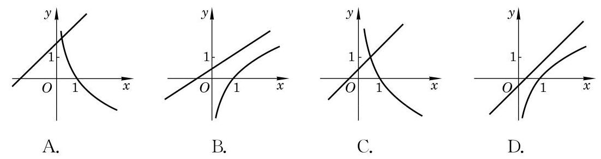
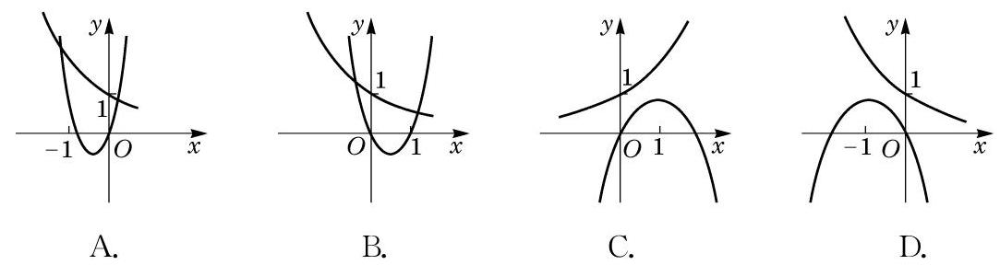

复习题A · 1
- 填空题:
(1)若点 在幂函数 的图像上，则该幂函数的表达式为___； 若点 在指数函数 的图像上,则该指数函数的表达式为 ; 若点 在对数函数 的图像上,则该对数函数的表达式为___.
(2)若幂函数 在区间 上是严格减函数，则实数 的取值范围为___.
(3)已知常数 且 ，假设无论 为何值，函数 的图像恒经过一个定点. 则这个点的坐标为___.
答案与解析收起 / 展开
- (1) . (2) . (3) .
教师整合版 / 沪教版高中数学
必修第一册
第4章幂函数、指数函数与对数函数 · 保留教材主线与原题
教材与正式教参整合
航天之父、俄罗斯科学家齐奥科夫斯基(K. E. Tsiolkovsky)于 1903 年给出火箭速度的计算公式
其中, 是燃料相对于火箭的喷射速度, 是燃料的质量, 是火箭 (除去燃料) 的质量, 是火箭将燃料喷射完之后达到的速度. 可以看出 与 是对数函数的关系,由于对数函数增长速度很慢,通过大量增加燃料 (即增加 ) 难以达到航天器绕地球运行所需要的第一宇宙速度，据此他又提出了采用多级火箭发射航天器的设想.
现代运载火箭大多采用三级火箭，当第一级火箭的燃料用完时，点燃第二级火箭并抛弃第一级火箭,这相当于大大减小第二级火箭推进时的 ,从而在第二级火箭燃料用完时航天器可以达到较高的速度. 然后类似地点燃第三级火箭并抛弃第二级火箭, 最终可以将航天器送入太空轨道.
幂函数 的定义域由指数 决定. 随着指数 的不同，幂函数的定义域是不同的.
幂函数 有单调性:当 时，它在区间 上是严格增函数；而当 时，它在区间 上是严格减函数.
指数函数 的定义域是全体实数.
指数函数 有单调性:当 时，它在 上是严格增函数； 而当 时，它在 上是严格减函数.
对数函数 的定义域是全体正实数.
对数函数 有单调性:当 时，它在区间 上是严格增函数；而当 时，它在区间 上是严格减函数.
(1)若点 在幂函数 的图像上，则该幂函数的表达式为___； 若点 在指数函数 的图像上,则该指数函数的表达式为 ; 若点 在对数函数 的图像上,则该对数函数的表达式为___.
(2)若幂函数 在区间 上是严格减函数，则实数 的取值范围为___.
(3)已知常数 且 ，假设无论 为何值，函数 的图像恒经过一个定点. 则这个点的坐标为___.
(1)若指数函数 在 上是严格减函数，则下列不等式中，一定能成立的是 ( )
A. ; B. ;
C. ; D. .
(2)在同一平面直角坐标系中,一次函数 与对数函数 ( 且 的图像关系可能是 ( )

(第 2(2)题)
(1) ; (2) ；
(3) .
(1) 与 ； (2) 与 ；
(3) 与 .
4.(1)考虑幂函数 ,因为指数大于 0 的幂函数在区间 上是严格增函数,所以 .
(2)考虑指数函数 ,因为底小于 1 且大于 0 的指数函数 在 上是严格减函数,所以 .
(3)因为 的对数函数 在区间 上是严格减函数,所以 .
当 时,函数 在区间 上是严格减函数. 所以,当 时,该函数取到最大值,而此时 ,故无解.
因此 .
(1)已知 ，设幂函数 的图像关于原点成中心对称，且与 轴及 轴均无交点,则 的值为___.
(2)设 、 为常数，若 ， ，则函数 的图像必定不经过第象限.
(1)若 ,而 ,则下列不等式正确的是 ( )
A. ; B. ;
C. ; D. .
(2)在同一平面直角坐标系中,二次函数 与指数函数 的图像关系可能为 ( )

(第 2(2)题)
证明: 假设 是有理数,那么它可以写成既约分数的形式 ,其中 均为正整数. 它等价于 ,因此 . 因为对任意的正整数 为 个 2 相乘,所以 均是偶数,而对任意的正整数 均为奇数,说明 ,与 矛盾. 这说明 不可能是有理数.
再比较 与 1.58. 这等价于比较 3 与 ,即比较 与 . 因为 ,所以 . 由对数函数的单调性得 .
最后比较 与 1.59. 这等价于比较 3 与 ,即比较 与 . 因为 ,所以 . 由对数函数的单调性得 .
因此 的第二位小数为 8 .